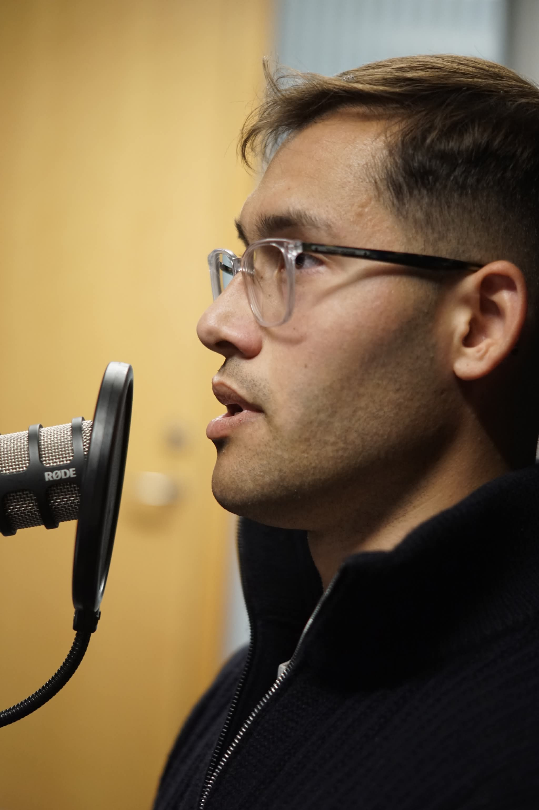

Simon Bødker
Kandidatstuderende · Skribent · Podcastvært
Min uge veksler mellem forelæsninger på Københavns Universitet, dataleverancer til direktionen i Københavns Kommune og samtaler med meningsdannere i podcasten A til Z. Jeg skriver debatindlæg i Jyllands-Posten og Berlingske om økonomi, arbejdsmarked, klima og europæiske spørgsmål — og mit bidrag er kombinationen: data, kildekritik og økonomi i samme analyse.

Læs mit debatindlæg: »Den negative sociale kontrol lever i bedste velgående«